.jpg){kind=link}


.jpg){kind=link}

_-_Pho_Hanoi_Authentic_2024-12-01.jpg){kind=link}

_-_Banh_Mi_Ancient_Saigon_2024-12-20.jpg){kind=link}


_(38540830421).jpg){kind=link}


.jpg){kind=link}

Hanoi
Sofitel Legend Metropole Hanoi
A historic hotel on Ngo Quyen Street in Hanoi's Hoan Kiem district, with rooms across two wings, several restaurants, a courtyard, and outdoor pool.
Check roomsOfficial hotel website · opens in a new tab
Asia / A place to get to know
Limestone waterways, living craft traditions and memorable street food

Welcome to Vietnam
Vietnam stretches from northern mountains and limestone waterways to central trading towns and the Mekong Delta. In Hanoi, lakes, temples and streets of small food shops offer an introduction to the country's history and everyday life.
Explore a little further
Landmarks, landscapes and the stories behind them. Select a photograph for a closer look.
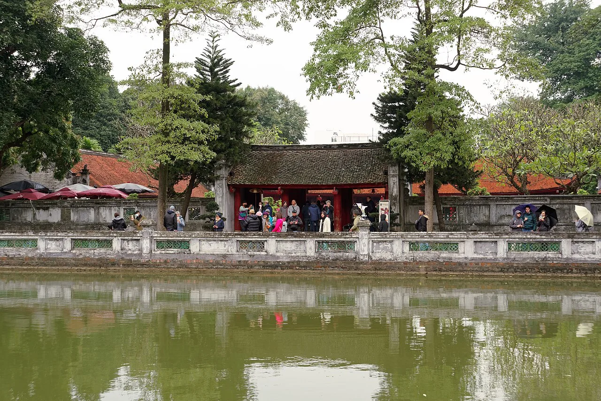
Founded in 1070 and associated with Vietnam's early imperial academy, this Confucian complex honours scholarship. Courtyards, gardens and stone stelae recall generations of students and mandarins.
Jakub Hałun · CC BY 4.0 . Resized as needed and converted to WebP. No crop.
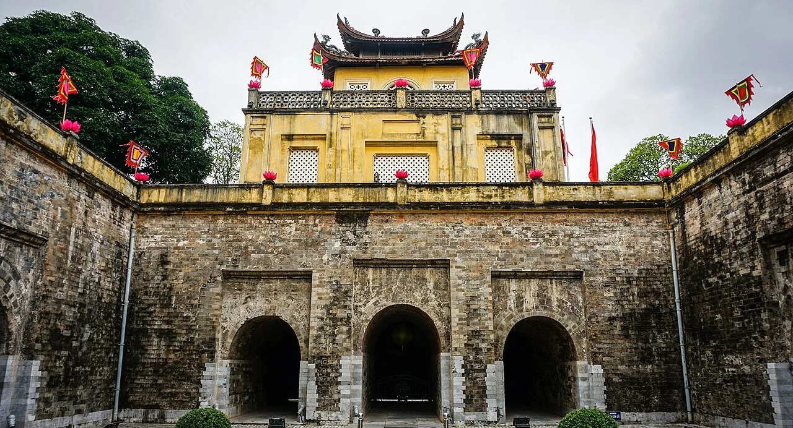
This Hanoi site preserves traces of the political centre established by the Lý dynasty. Archaeological remains and surviving structures reveal successive periods of Vietnamese imperial history.
katiebordner · CC BY 2.0 . Resized as needed and converted to WebP. No crop.
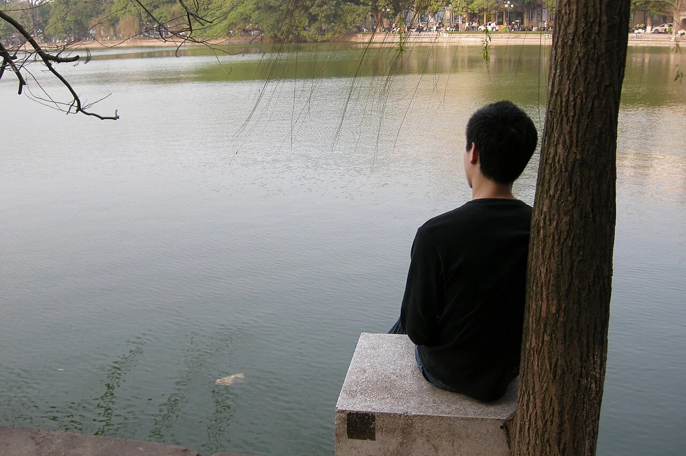
A central gathering place in Hanoi, Hoàn Kiếm Lake is linked to the legend of a returned sword. Ngọc Sơn Temple stands on an island near its northern shore.
Vyacheslav Argenberg · CC BY 4.0 . Resized as needed and converted to WebP. No crop.
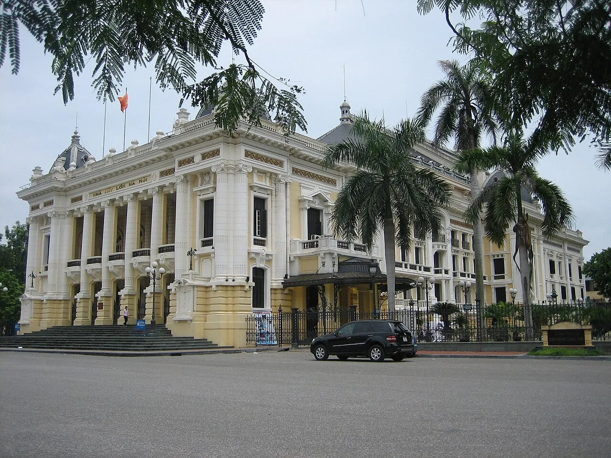
Built during the French colonial period, Hanoi's Opera House anchors a formal square near the city's centre. Its ornate façade reflects European architectural influences in early twentieth-century Hanoi.
thalling55 · CC BY 2.0 . Resized as needed and converted to WebP. No crop.
Hội An's old town preserves the streets and buildings of a historic trading port. Merchant houses, temples and assembly halls reflect connections between Vietnamese, Chinese and Japanese communities.
Steffen Schmitz ( more photos ) · CC BY-SA 4.0 . Resized as needed and converted to WebP. No crop.
Explore a little further
Water puppetry grew from village traditions of the Red River Delta. Đông Hồ printing and Bát Tràng pottery demonstrate the continued importance of skilled craft in northern Vietnam.
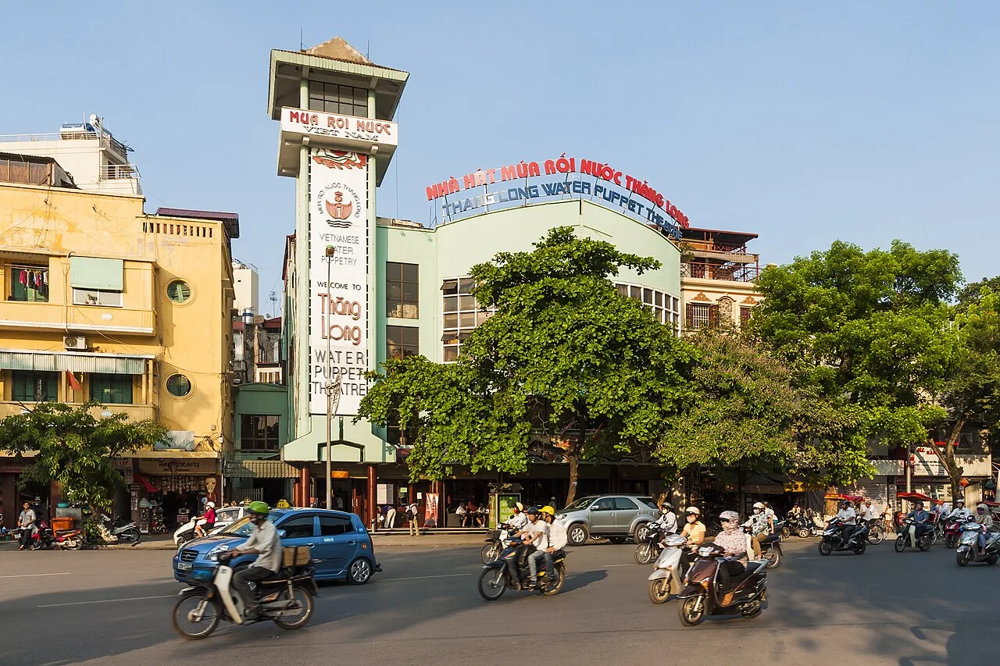
Thăng Long Water Puppet Theatre
CEphoto, Uwe Aranas · CC BY-SA 3.0 . Resized as needed and converted to WebP. No crop.
Đông Hồ painting
Vietnamese artist · Public domain . Resized as needed and converted to WebP. No crop.
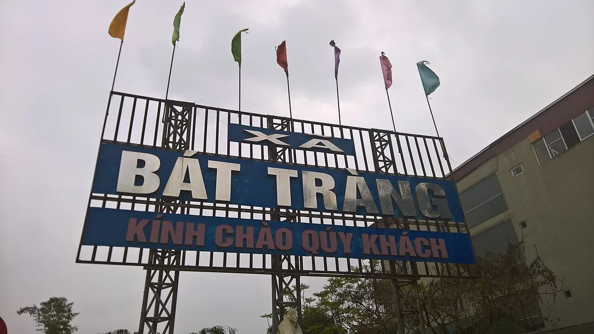
Bát Tràng pottery village
Donald Trung · CC BY-SA 4.0 . Resized as needed and converted to WebP. No crop.
Explore a little further
Vietnamese cooking pairs rice and noodles with broths, herbs, vegetables and sauces, with distinctive dishes in each region.
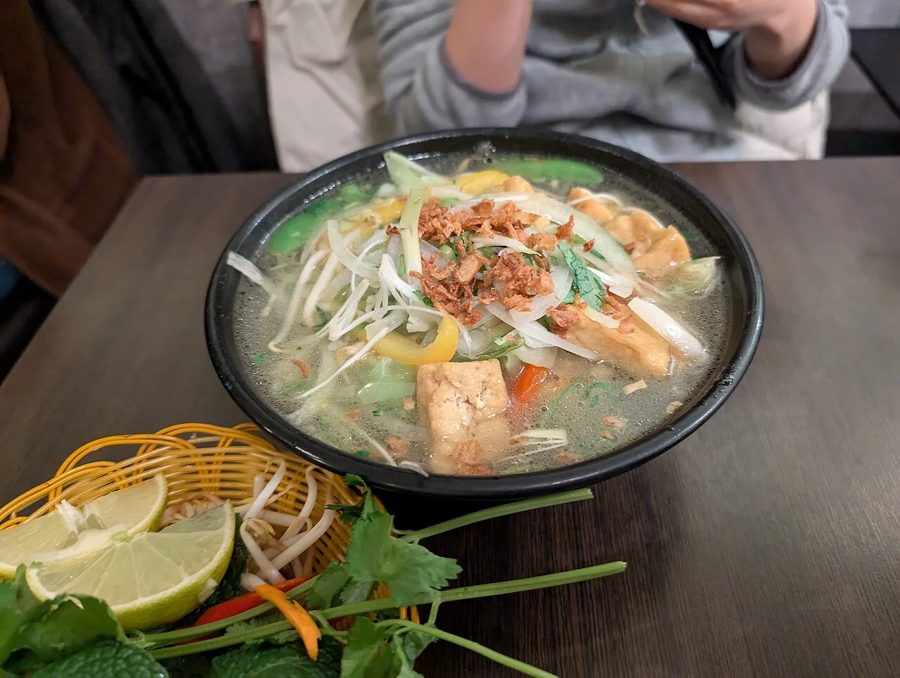
Phở is a rice-noodle soup with fragrant broth, commonly served with beef or chicken and fresh accompaniments.
Andy Li · CC0 . Resized as needed and converted to WebP. No crop.
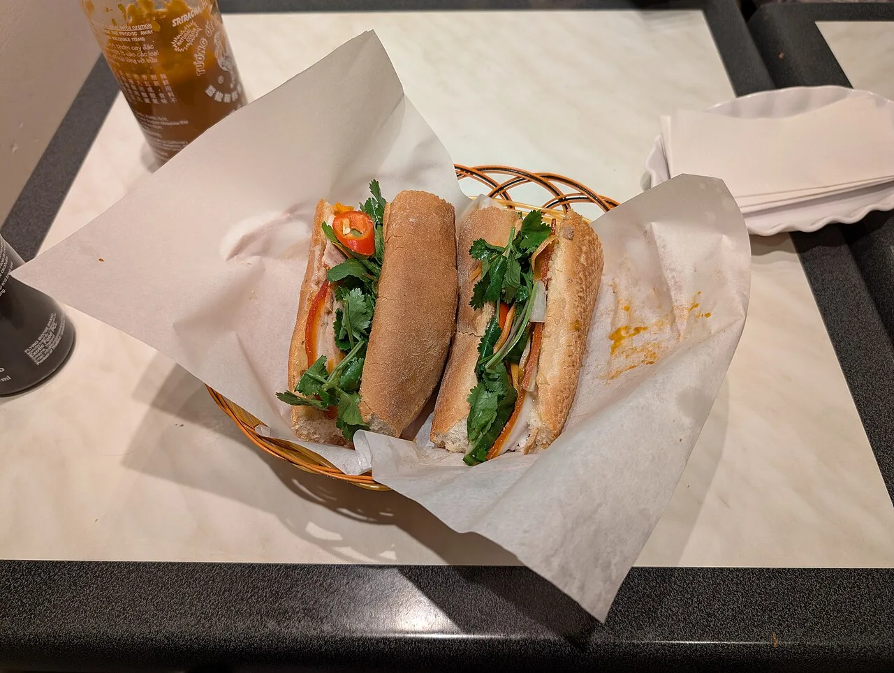
Bánh mì combines a crisp baguette with savoury fillings, pickled vegetables, herbs and condiments.
Andy Li · CC0 . Resized as needed and converted to WebP. No crop.
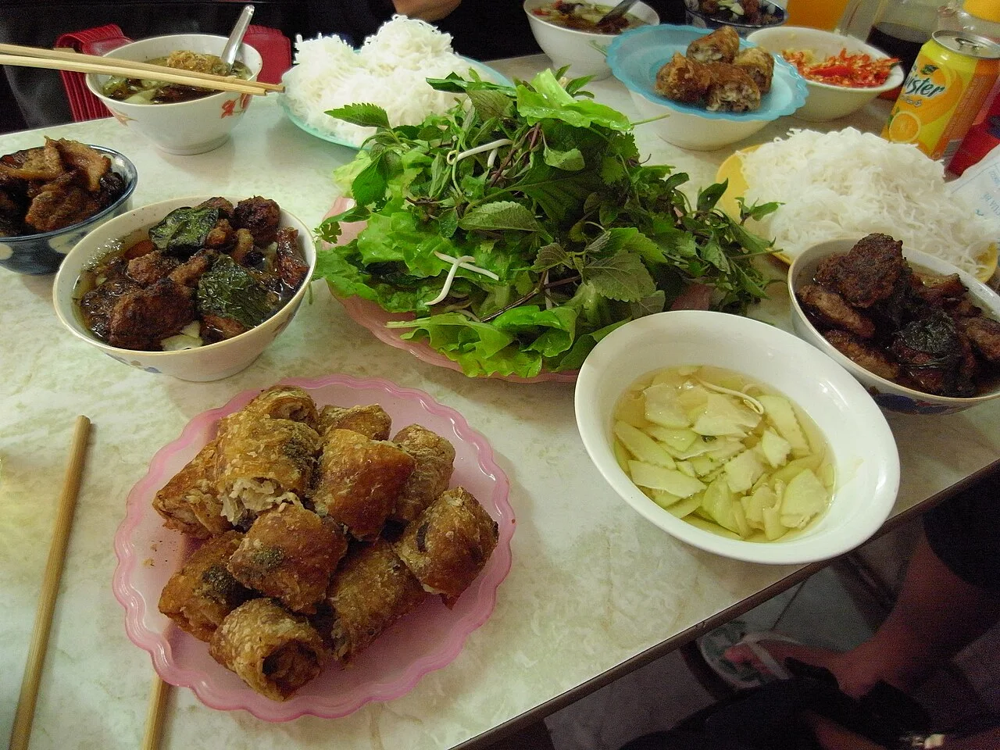
Bún chả pairs grilled pork with rice vermicelli, herbs and a sweet-sour dipping sauce, and is closely associated with Hanoi.
Larry · CC BY-SA 2.0 . Resized as needed and converted to WebP. No crop.
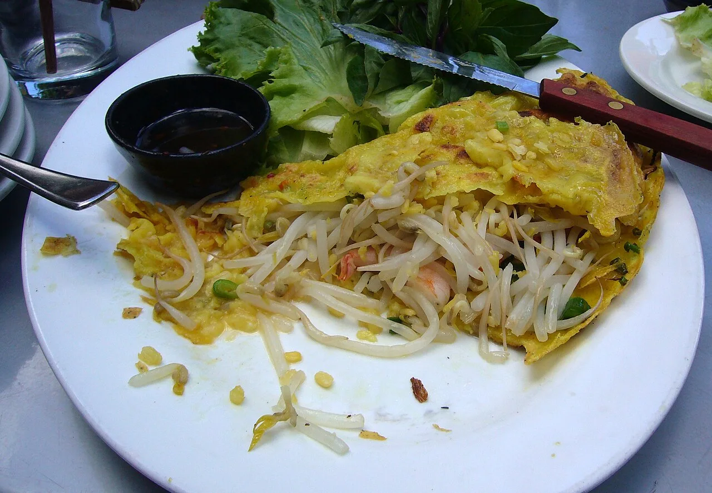
Bánh xèo is a crisp savoury rice-batter pancake, commonly filled with ingredients such as pork, shrimp and bean sprouts.
Kent Wang from Austin, TX · CC BY-SA 2.0 . Resized as needed and converted to WebP. No crop.
Explore a little further
Explore limestone landscapes by boat, river commerce in the Mekong Delta and mountain views around Sa Pa.
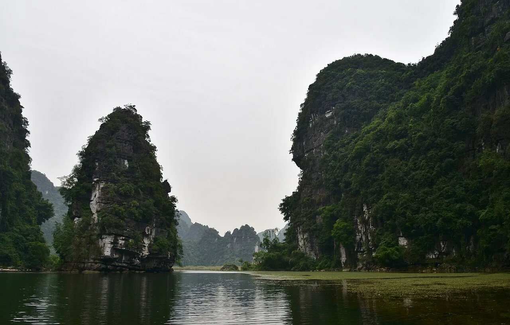
Take an authorised rowing-boat route through limestone scenery, waterways and caves, learning how the area's landscape and human history are connected.
Richard Mortel from Riyadh, Saudi Arabia · CC BY 2.0 . Resized as needed and converted to WebP. No crop.
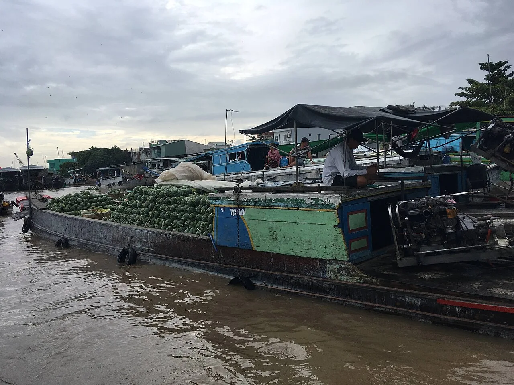
Join a local boat trip near Cần Thơ to observe river trading and food boats, with the level of activity varying by day and season.
Christophe95 · CC BY-SA 4.0 . Resized as needed and converted to WebP. No crop.
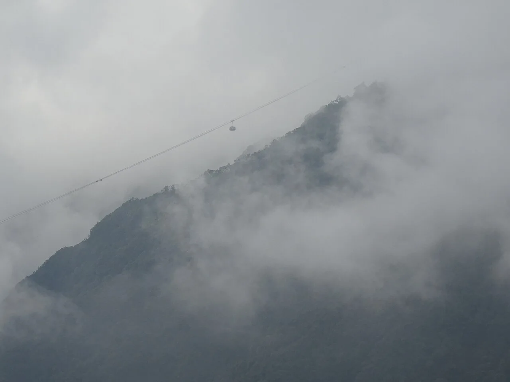
Ride toward the Fansipan summit area for views of mountain ridges and the valleys around Sa Pa when cloud and weather conditions allow.
Christophe95 · CC BY-SA 4.0 . Resized as needed and converted to WebP. No crop.
Explore a little further
Hanoi's weekend market streets offer evening browsing, while Hồ Chí Minh City's Bùi Viện area is known for its lively restaurant and bar scene.
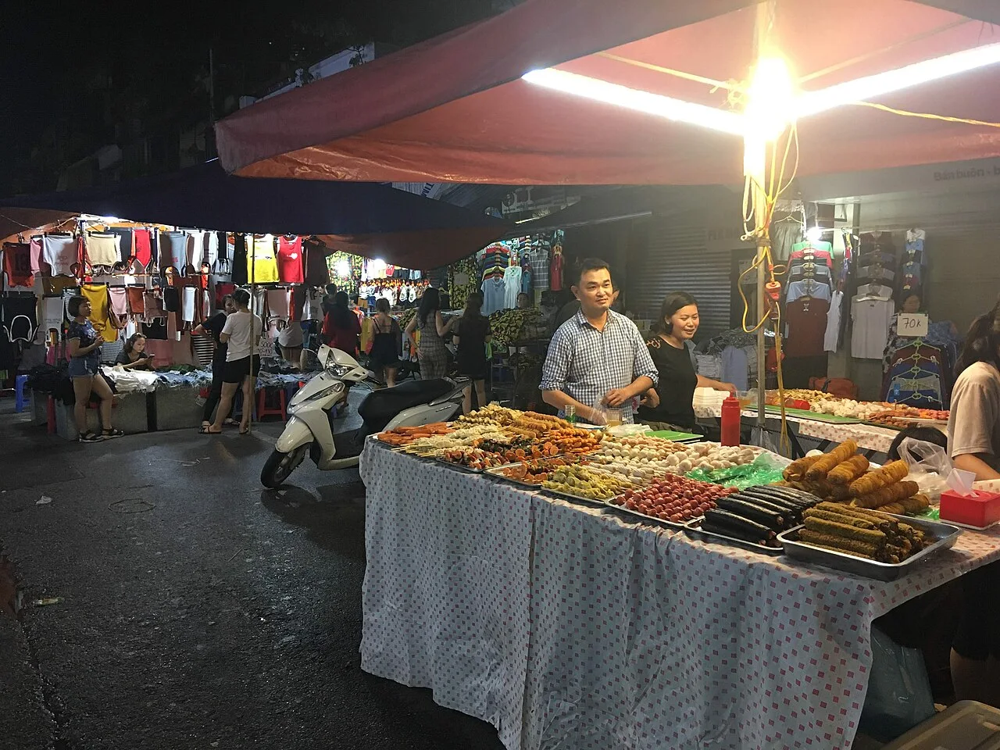
Hanoi Weekend Night Market
Christophe95 · CC BY-SA 4.0 . Resized as needed and converted to WebP. No crop.
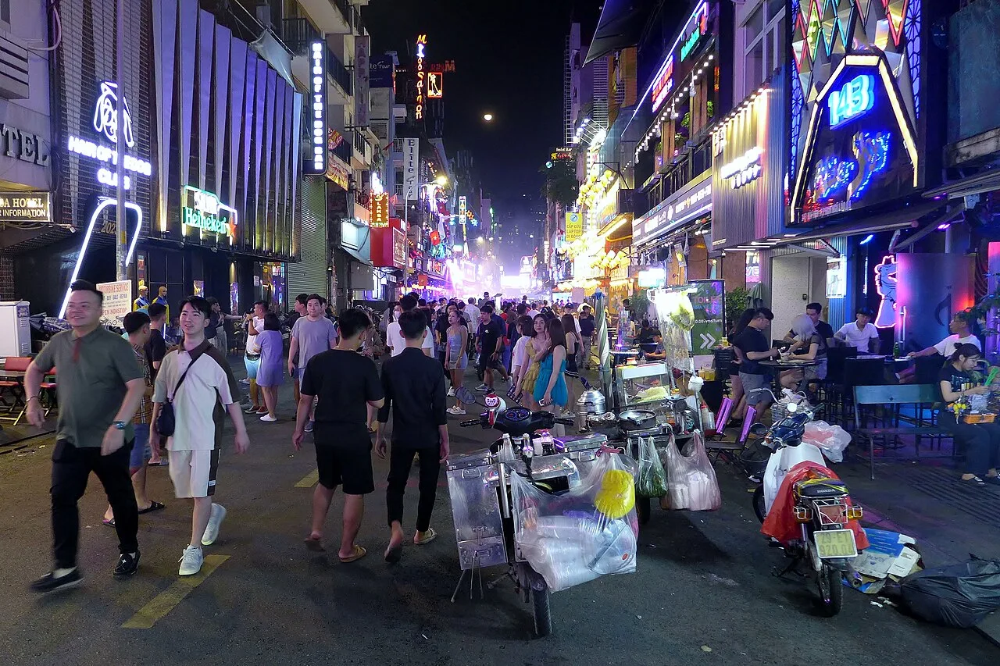
Bùi Viện Street
Bahnfrend · CC BY-SA 4.0 . Resized as needed and converted to WebP. No crop.
Explore a little further
A country overview with selected attraction markers. Use local transport information to plan the route between regions.
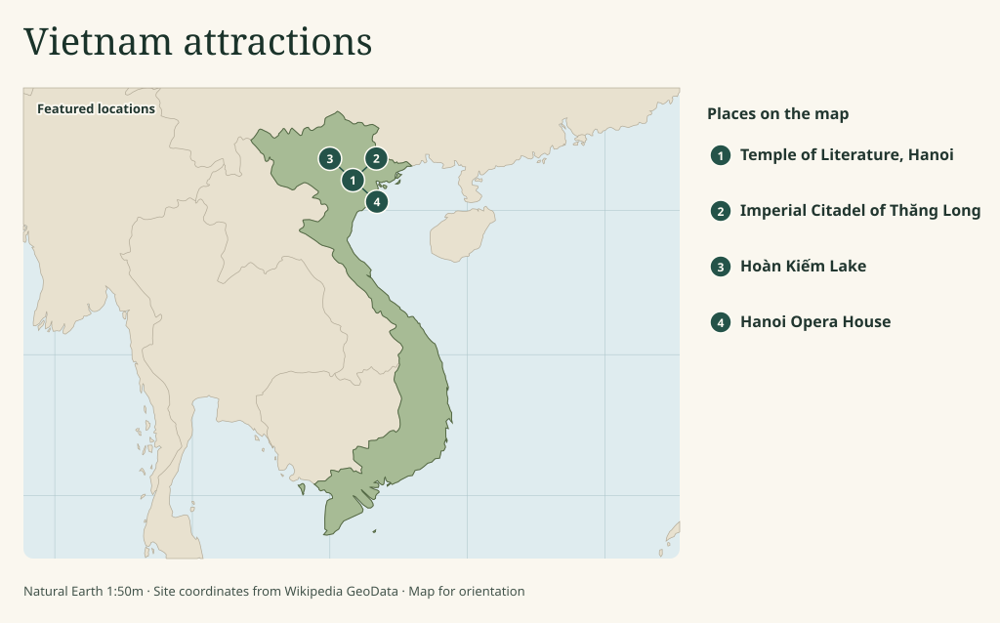
Illustrative overview. Marker locations and map sources are documented below.
A place to settle in
Two places to consider for your trip. Check room choices, current prices and availability directly with each hotel.
Hanoi
A historic hotel on Ngo Quyen Street in Hanoi's Hoan Kiem district, with rooms across two wings, several restaurants, a courtyard, and outdoor pool.
Check roomsOfficial hotel website · opens in a new tab
Hanoi
On Hang Be Street in Hanoi's Old Quarter, this hotel offers rooms and suites, a restaurant, a rooftop bar, and an on-site spa.
Check roomsOfficial hotel website · opens in a new tab
The hotel sets its prices, booking terms and payment currency. Some properties confirm reservations after an enquiry.
Know your money
Get familiar with the local currency and estimate what an amount in your own currency is worth.
Daily reference Rates By Exchange Rate API . The rate date appears with your estimate.
Morning to evening · Vietnam
Jakub Hałun · CC BY 4.0 . Resized as needed and converted to WebP. No crop.
katiebordner · CC BY 2.0 . Resized as needed and converted to WebP. No crop.
Vyacheslav Argenberg · CC BY 4.0 . Resized as needed and converted to WebP. No crop.
thalling55 · CC BY 2.0 . Resized as needed and converted to WebP. No crop.
Suggested order and approximate times, with breaks for meals and travel. Confirm access, reservations, transport and operating hours locally. Evening photographs do not guarantee an event or performance.
Confirm arrangements with the official visitor resource .
Visitor resource: https://vietnam.travel/
Guide: Atlas & Away · Vietnam · researched 18 November 2026.
Explore a little further
A starter in Vietnamese. The pronunciation hints are approximate; listen to local speakers and ask politely when unsure.
| Phrase | Meaning | Say it approximately |
|---|---|---|
| Xin chào | Hello | sin chow |
| Cảm ơn | Thanks | kahm uhn |
| Tôi xin lỗi | I’m sorry | toy sin loy |
| Bao nhiêu tiền? | What does this cost? | bow nyew tyen |
| Tôi không hiểu | I don’t understand | toy kohng hyew |
A little preparation
0 of 4 preparations complete
Saved places and checklists use this browser’s local storage. They are not an account or a booking.
Before you go
The example itinerary stays around Hanoi. The full country guide covers several regions; allow extra days and transport for places beyond that route.
Use the Hotels section to open a property’s official website and check rooms, prices and booking terms. You complete any reservation and payment with the hotel.
Open the enquiry page or email profannan712@gmail.com .
Guide researched on 18 November 2026. Text and code were developed with ChatGPT/Codex assistance for this student learning project.
Phrase reference: Vietnamese phrasebook .
Natural Earth (base data), ChatGPT in Codex (map design) · Public-domain Natural Earth base data . Projected Natural Earth boundaries, added labels and site markers, and exported SVG.